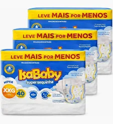
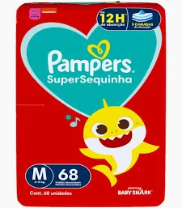
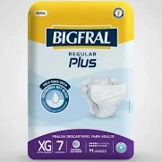
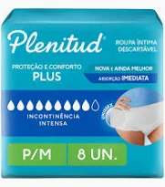
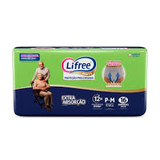
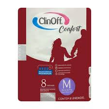

Farmácia Central
Fraldas Infantil

Fralda Isababy Hiper
A fralda Isababy destaca-se por seu excelente custo-benefício,
oferecendo até 12 horas de proteção. Os pacotes no formato "Hiper" ou "Mega" são
ideais para o dia a dia e para a hora de dormir, apresentando gel superabsorvente,
barreiras antivazamento e toque macio de algodão.
Solicitar Entrega/Delivery

Fralda Pampers Pants Hiper
A fralda Pampers Pants Ajuste Total é o modelo tipo calça da Pampers, ideal para dar
mais liberdade de movimento a bebês ativos que já andam ou engatinham. Ela oferece
facilidade na hora da troca, vestindo como um shortinho, e garante até 12 horas de
proteção diurna ou noturna com tecnologia anti-vazamento.
Solicitar Entrega/Delivery

Fralda Cremer Shortinho Hiper
A Fralda Cremer Shortinho (estilo fralda-calça) é projetada para garantir
praticidade aos pais e liberdade de movimento para os bebês mais ativos. Ela se
destaca por vestir fácil como calcinha ou cuequinha e possuir costuras laterais
rasgáveis que simplificam a remoção na hora da troca.
Solicitar Entrega/Delivery

Fralda Pampers Super Sequinha Hiper
A Pampers Super Sequinha (antiga Pampers Supersec) é uma opção de fralda descartável
focada em custo-benefício. Ela oferece até 12 horas de proteção contra vazamentos
graças às suas 5 camadas de absorção e ao gel mágico que retém a umidade, mantendo o
bebê sequinho durante o dia e a noite.
Solicitar Entrega/Delivery

Fralda Babysec
Fralda babysec se destaca no mercado brasileiro pelo
excelente custo-benefício, trazendo o apelo visual da Galinha Pintadinha e prometendo
até 12 horas de proteção dia e noite.
Solicitar Entrega/Delivery

Fralda Mili Premium Jumbo
A fralda Mili no pacote Jumbo é uma das opções mais vendidas da marca por oferecer
excelente custo-benefício em embalagens intermediárias. Ela está dividida principalmente
em duas linhas de destaque: a Mili Ultra Seca (focada em proteção diária e economia) e a
Mili Love & Care (linha premium com toque de algodão e 6 camadas de proteção).
Solicitar Entrega/Delivery

Fralda MamyPoko Dia & Noite
A Fralda Calça MamyPoko Dia&Noite é uma das opções mais populares do mercado brasileiro
devido ao seu formato prático de vestir e excelente custo-benefício
Solicitar Entrega/Delivery

Fralda Pampers RN
A Fralda Pampers tamanho RN (Recém-Nascido) é especialmente projetada para bebês até
4 kg, enquanto a versão RN+ atende bebês de até 6 kg. De acordo com especialistas do
setor de cuidados infantis, a linha Premium Care se destaca como a melhor opção para
essa fase devido à sua extrema maciez e proteção umbilical.
Solicitar Entrega/Delivery
Fralda Geriátrica

Fralda BigFral Plus
Fralda Bigfral Plus é uma fralda geriátrica descartável desenvolvida para
adultos com incontinência urinária intensa, além de ser indicada para uso pós-parto e
pós-operatório.
Consultar Valor

Roupa Íntima Plenitude Plus
A Roupa Íntima Plenitud Protect Plus é um painel descartável em formato de
calça/cueca indicado para adultos com incontinência urinária moderada a intensa.
Diferente de uma fralda geriátrica convencional, ela é fácil de vestir e tirar,
garantindo discrição e maior autonomia para o usuário.
Consultar Valor

Roupa Íntima Lifree
Você disse: roupa intima lifreeA roupa íntima Lifree (também conhecida como fralda-calça)
é uma das opções mais recomendadas do mercado para quem busca conforto, discrição e
segurança no controle da incontinência urinária. Com tecnologia japonesa, o produto
destaca-se por vestir exatamente como uma calcinha ou cueca regular, permitindo total
liberdade de movimento.
Consultar Valor

Fralda ClinOff Confort
A Fralda Geriátrica Clin Off Confort é um produto descartável unissex desenvolvido
para adultos que necessitam de proteção em casos de incontinência leve a moderada,
pós-operatório ou pós-parto. A linha se destaca pelo excelente custo-benefício no
mercado de higiene adulta.
Consultar Valor